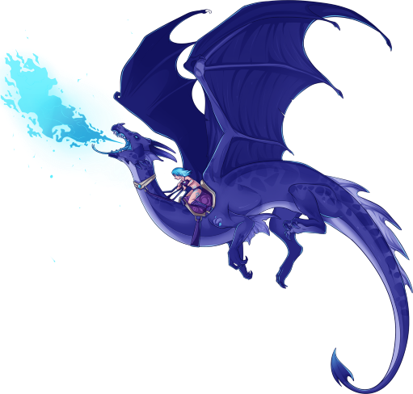

Austin Murry's Student Digital Media, Art and Technology Webpage
This is my personal Repo page where I am testing how to work with HTML
I am updating this site as time goes on and adding new pages
Here's a dragon image below to hold us over until then!

- Blue Dragon
- A Repo Webpage
- DIGIT Rules
- Profit at some point
We are at Penn State Erie, The Behrend College.
Here is a link to the Code View of my PSUStudent repository. We’ll even link that to the GitHub octokitty image (named "Octocat"):